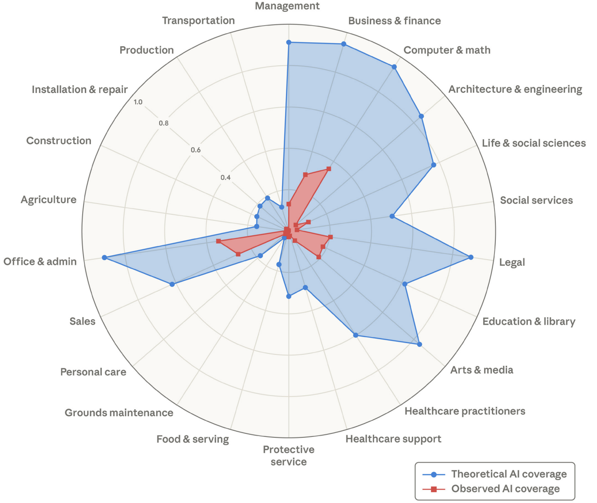

A taxi driver recently asked me what I was doing at the university around midnight. I told her I was preparing a pop quiz for the next morning because many students had been submitting assignments generated with AI. She then asked a question she had clearly been thinking about: would AI affect her job? I told her that in the short run the lobbying would likely take care of it. But in the long run, it is difficult to see how human drivers could compete with autonomous systems that are safer, cheaper, faster, and available 24/7.
The rise of orchestration
Taxi drivers are not alone in facing this uncertainty. As AI models continue to improve in both capability and accuracy, the need for human input diminishes. They are becoming both reliable in their outputs and consistent in their behavior across conditions. A wide range of tasks can now be automated with high precision. This makes it possible to build agents that are both low-cost and easy to scale. Unlike humans, these agents can also be monitored at every micro-decision, making performance evaluation continuous and granular. This shifts the competitive advantage toward systems that emphasize orchestration, the coordinated management of multiple automated agents, workflows, and decision processes. As a result, industries are beginning to restructure their business models.
AI agents can be monitored at every micro-decision, making performance evaluation continuous and granular.
Who bears the burden of transition?
When such transformations occur, junior workers often adapt more easily, while late-career workers who have invested years in a specific role may face more difficult transitions. Recent research by Anthropic suggests that degree holders are among those most exposed to tasks that AI can automate, although observed coverage remains far below its theoretical capabilities. Of course, their evidence is based on observed usage by their customers; corporate teams may already be developing far more comprehensive automation solutions behind the scenes.

Tech giants' growing market power
I think the main issue here is the tech giants. Even before the current AI boom, these corporations were aggressively expanding across diverse markets. They already control critical infrastructure, data flows, and distribution channels across the economy. Now, by building AI themselves, they are compounding that advantage. With AI, they can turn these advantages into orchestration systems capable of managing labor, workflows, and decision-making at scale. The incentive is clear: penetrate as many markets as possible. Regulations will play a crucial role in shaping this process, but these corporations often find workarounds. They may even package orchestration systems as services sold directly to other businesses.
Economists should arguably pay more attention to these developments. Instead, many in the field remain caught up in the race for robust estimates of localized effects, practically waiting for the automation shock to arrive. Fortunately, recent work by Acemoglu et al. (2026) offers a useful corrective to the automation-first trajectory of AI development.
Toward pro-worker AI
Their framework shows that AI need not be deployed primarily as a labor-saving substitute; it can instead be designed to expand worker capabilities, raise the value of human expertise, and create new tasks that complement rather than displace labor. That vision is especially important in an economy increasingly shaped by firms with enormous market power. Policymakers should take these proposals seriously if they want to minimize the potential disruptions associated with AI.
Selected references
- Massenkoff, M., & McCrory, P. (2026). Labor market impacts of AI: A new measure and early evidence. Anthropic Research. https://www.anthropic.com/research/labor-market-impacts
- Acemoglu, D., Autor, D., & Johnson, S. (2026). Building Pro-Worker Artificial Intelligence. NBER Working Paper 34854. https://doi.org/10.3386/w34854